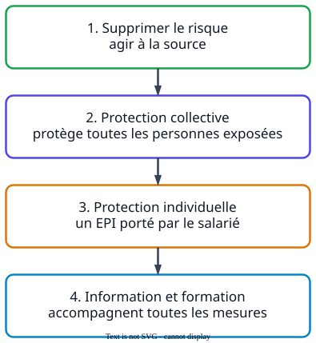

Ce que demandent les sujets
- « Proposer une mesure de prévention collective et une mesure de prévention individuelle. »
- « Proposer une mesure relevant de la formation ou de l'information. »
La méthode

À retenir
- Neuf principes généraux de prévention
- règles de l'article L. 4121-2 du Code du travail, de « éviter les risques » à « donner les instructions appropriées ».
- Protection collective
- mesure qui protège toutes les personnes exposées ; prioritaire sur la protection individuelle.
- Protection individuelle
- équipement porté par le salarié (EPI), en complément.
- La forme attendue
- « Mesure de protection collective : installer… » Une mesure sans son type, ou du mauvais type, vaut insuffisant.
Un exemple de bac
« Proposer une mesure de prévention individuelle et une mesure de prévention collective permettant d'éviter le risque biologique lors de la collecte des déchets. »
Sujet 2023, Antilles-Guyane
InsuffisantMettre des gants et faire attention.
MaîtriséMesure individuelle : porter des gants résistant aux piqûres, qui sont un équipement de protection individuelle. Mesure collective : mécaniser le vidage des bacs, pour que l'éboueur ne touche plus les déchets.
« Faire attention » n'est pas une mesure de prévention. Chaque mesure est nommée avec son type.